Práctica 6.2 - Despliegue de una aplicación PHP con Nginx y MySQL usando Docker y Docker-Compose
Proceso de dockerización de Nginx+PHP+MySQL
Primeramente hay que conectarse mediante SSH a nuestra máquina virtual.
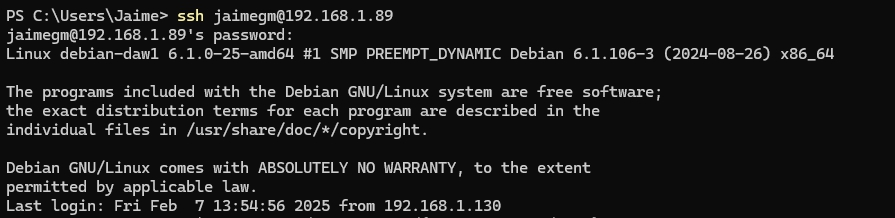
1. Estructura de Directorios
Para comenzar esta práctica, se deberá tener una estructura de directorios similar a la siguiente:
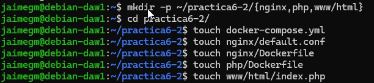
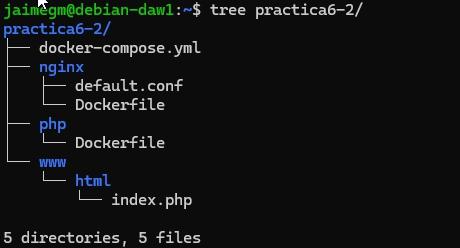
2. Creación de un Contenedor Nginx
Se deberá crear un contenedor Nginx y hacerlo funcionar para que permita alojar la aplicación PHP.
Para ello, primero, se deberá editar el archivo docker-compose.yml con el siguiente contenido:
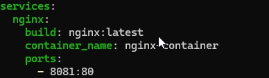
Y se iniciará el contenedor Nginx y se comprobará que funciona correctamente.
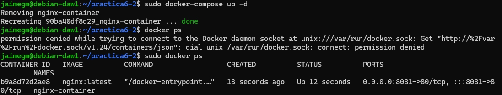
El archivo que se ha creado será el encargado de descargarse la última versión de la imagen de Nginx, crear un contenedor con ella y mapear el puerto 80 del contenedor al puerto 8081 del host.
Si accedemos a la dirección http://localhost:8081 deberá aparecer la siguiente pantalla:
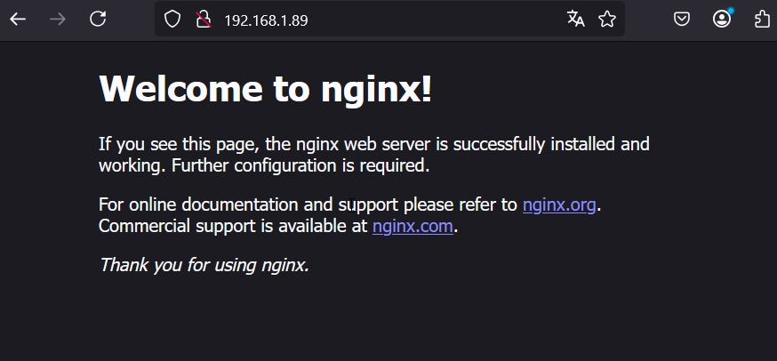
3. Creación de un Contenedor PHP
Editaremos el archivo index.php con el siguiente contenido:
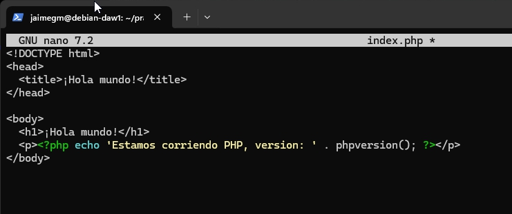
Hecho esto se creará el archivo de configuración default.conf en la carpeta nginx con el siguiente contenido:
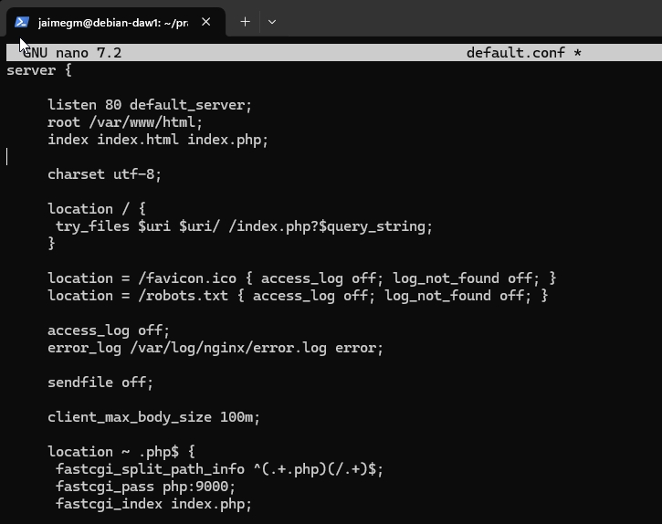
Y se modificará el archivo Dockerfile dentro del directorio nginx con el siguiente contenido:
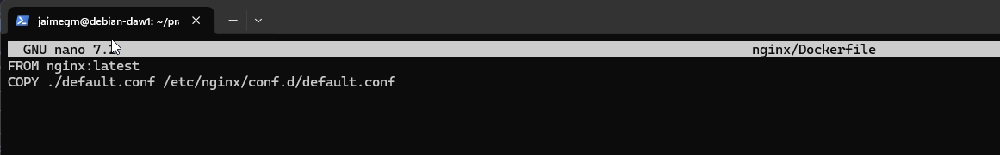
Se deberá modificar el archivo docker-compose.yml con el siguiente contenido:
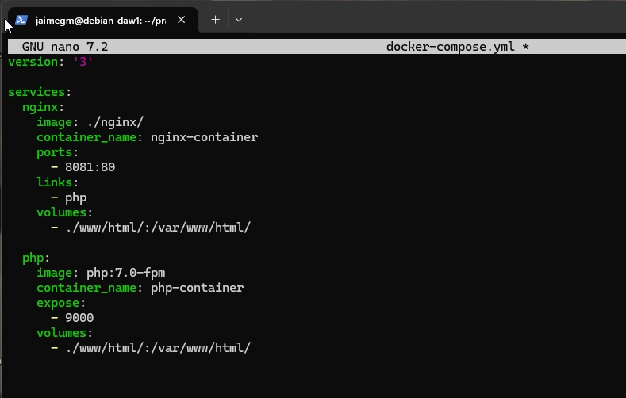
Con el fichero docker-compose.yml modificado, se creará un contenedor PHP en el puerto 9000 y enlazado con el contenedor Nginx.
Ahora levntaremos los contenedores y comprobaremos que funcionan correctamente.
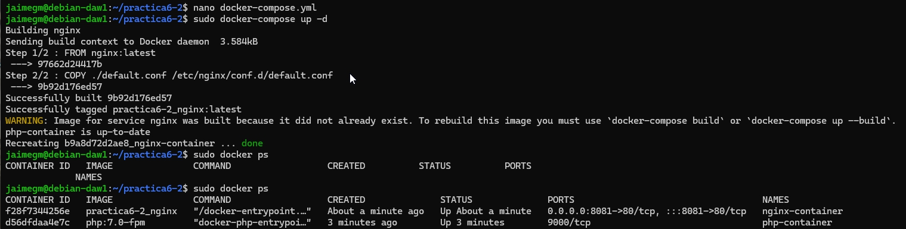
Si accedemos a la dirección http://localhost:8081 deberá aparecer la siguiente pantalla:
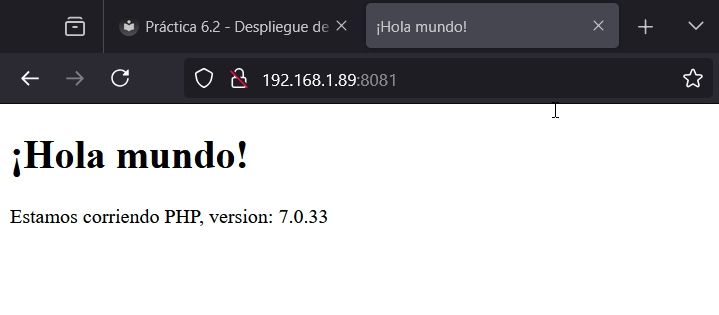
4. Creación de un Contenedor para Datos
Se deberá crear un contenedor para almacenar los datos. Para ello, se deberá modificar el archivo docker-compose.yml con el siguiente contenido:
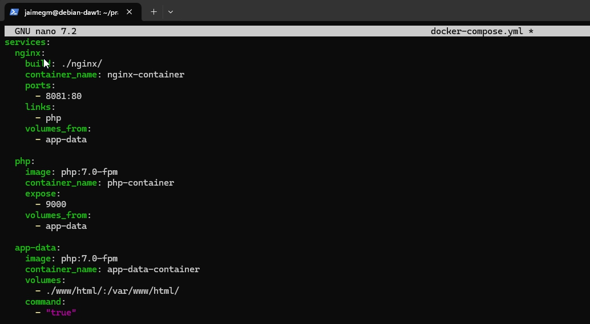
Comprobaremos que el contenedor de datos funciona correctamente.
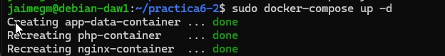
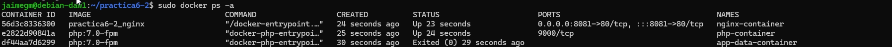
5. Creación de un Contenedor MySQL
Se deberá crear un contenedor MySQL y hacerlo funcionar para que permita alojar la base de datos de la aplicación PHP.
Para ello, se deberá modificar el archivo Dockerfile del directorio php con el siguiente contenido:
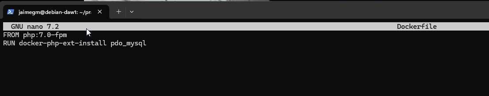
Se deberá modificar el archivo docker-compose.yml con el siguiente contenido:
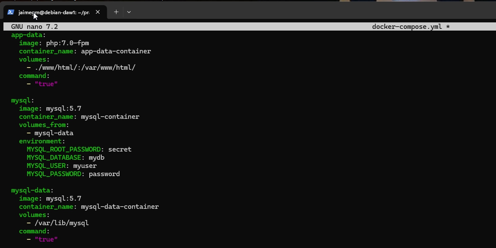
Se deberá modificar el archivo index.php con el siguiente contenido:
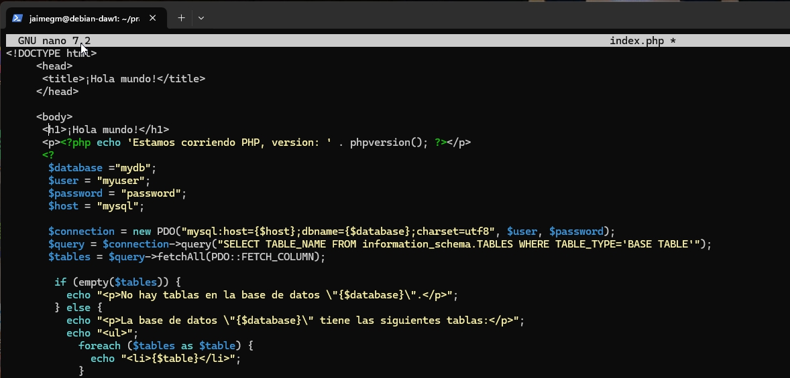
Se comprueba que el contenedor MySQL funciona correctamente.
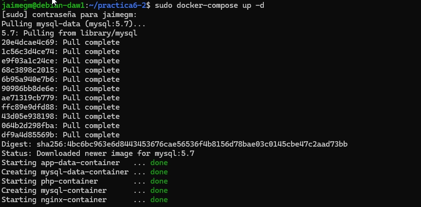
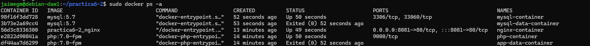
6. Verificación de Conexión a la Base de Datos
Si se accede a la dirección http://localhost:8081 deberá aparecer la siguiente pantalla:
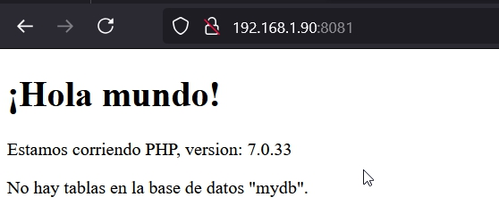
Pero si se modifica el archivo index.php con el siguiente contenido:
$user = 'root';
$password = 'secret';
Y deberá quedar de la siguiente manera:
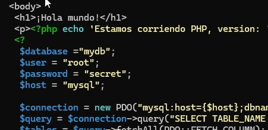
Si se accede a la dirección http://localhost:8081 deberá aparecer la siguiente pantalla:
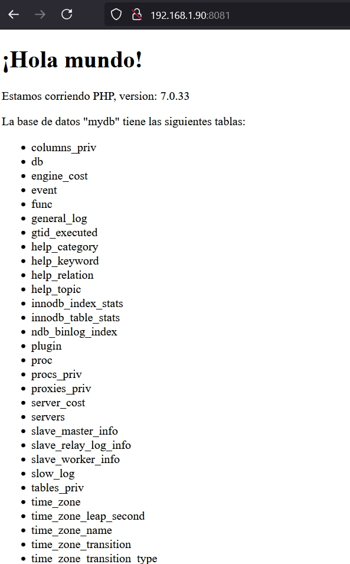
Con esto se comprueba que la aplicación PHP se conecta correctamente a la base de datos MySQL.
Y con esto se finaliza la práctica.
7. Esquema de la Aplicación
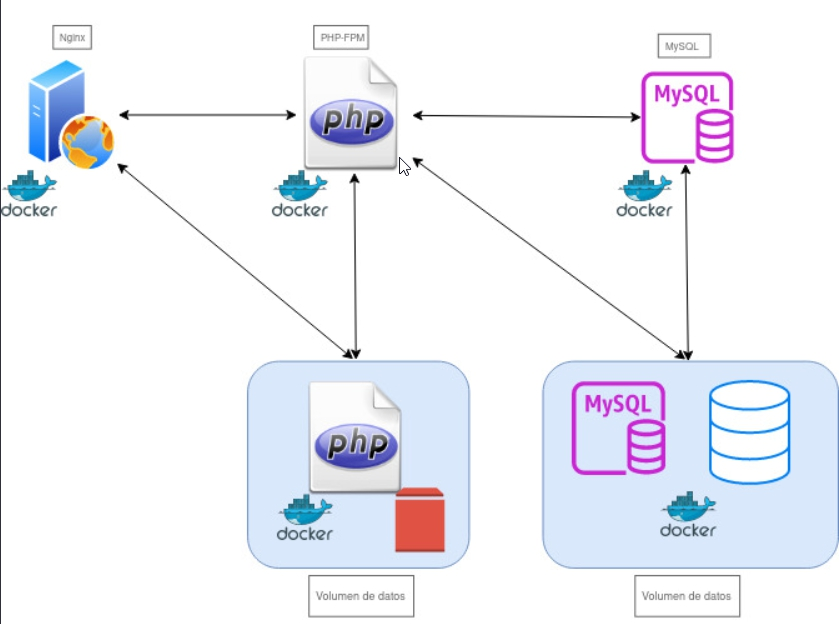